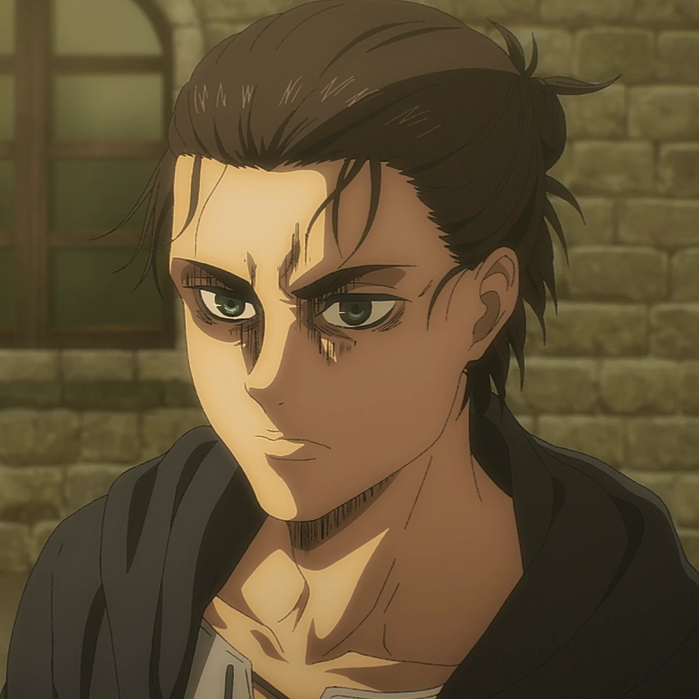
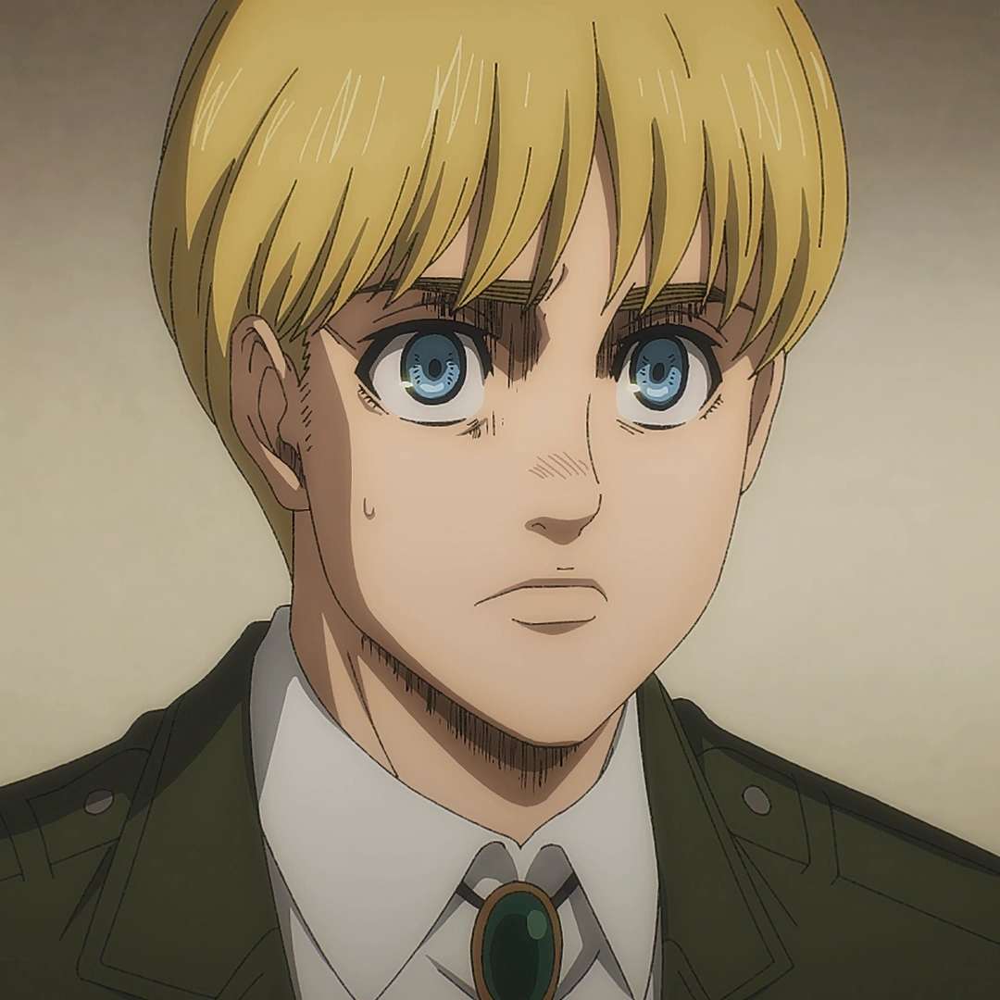

I personaggi principali di Attack on Titan
Eren Jaeger
Eren è nato e cresciuto nel Distretto di Shiganshina. Nell'anno 845 l'attacco improvviso di un Gigante Colossale e di un Gigante Corazzato porta alla distruzione della sua città natale e alla morte di sua madre, divorata viva da un gigante davanti ai suoi occhi. Impotente mentre assiste alla scena, Eren promette a sé stesso di vendicare la sua morte e di sterminare ogni gigante sulla faccia della terra. Arruolatosi nell'esercito, il ragazzo scoprirà di avere il potere di trasformarsi egli stesso in un gigante.
Mikasa Ackerman
Mikasa Ackerman (ミカサ・アッカーマン, Mikasa Akkāman) è la sorella maggiore adottiva di Eren Jaeger e il personaggio femminile principale dell'opera. Dopo che i suoi genitori vengono uccisi da dei Rapitori nell'Anno 844, viene salvata da Eren e viene adottata dalla sua Famiglia, fino al crollo del Wall Maria nell'Anno 845. Anche se desiderava vivere serenamente con Eren, Mikasa sceglie di seguirlo nel suo percorso militare, e si arruola assieme a lui nell'Armata Ricognitiva dopo aver partecipato al 104° Corpo di Addestramento Reclute ed essersi classificata come miglior Soldato dello Squadrone, al 1° Posto.
Armin Arlert
Armin Arlert (アルミン・アルレルト Arumin Arureruto) is the 15th and current commander (団長 Danchō?) of the Survey Corps, named so by Hange Zoë before their death.[10] He is also a childhood friend of Eren Yeager and Mikasa Ackerman, and one of the two deuteragonists of the series. Although he appears to be among the physically weakest of the 104th Training Corps, his intelligence and strategic genius makes him an invaluable asset, especially when paired with Hange.
Historia Reiss
Historia Reiss (ヒストリア・レイス Hisutoria Reisu) is the current Queen of the Walls. She is also the illegitimate child of the nobleman Rod Reiss and is the last remaining member of the Reiss royal family. She was raised in isolation on one of the Reiss family estates until the fall of Wall Maria. Shortly after, her mother was murdered in front of her, and Historia was coerced into renouncing her name and claim to the Reiss heritage, taking on the new identity of Krista Lenz (クリスタ・レンズ Kurisuta Renzu?), and entering military service, which was expected to result in her death. Largely thanks to Ymir's influence, she graduated as the 10th best soldier within the 104th Training Corps and joined the Survey Corps. She eventually reclaimed her true name, becoming an important asset to the Corps and ascending to the throne after the success of the revolution against the government.
Reiner Braun
Reiner Braun (ライナー・ブラウン Rainā Buraun) è un Guerriero proveniente da un luogo all'esterno delle Mura, chiamato "Marley". Partecipò al 104° Corpo di Addestramento Reclute arrivando a classificarsi 2° nel suo Squadrone e, successivamente, diviene membro dell'Armata Ricognitiva. Da tutti i suoi compagni è considerato una persona carismatica e affidabile, ispirando grande fiducia nelle persone accanto a lui che lo definiscono addirittura come un fratello maggiore. Assieme a Berthold Huber e Annie Leonhart possiede l'abilità di trasformarsi in un Gigante . Viene inviato con i suoi compagni al Distretto di Shiganshina nell'Anno 845 per distruggere le Mura e infiltrarsi nell'Esercito, in cerca della "Coordinata". Quando la sua vera identità (ossia il Gigante Corazzato) viene rivelata diventa la nemesi di Eren Jaeger e uno dei principali antagonisti della storia.